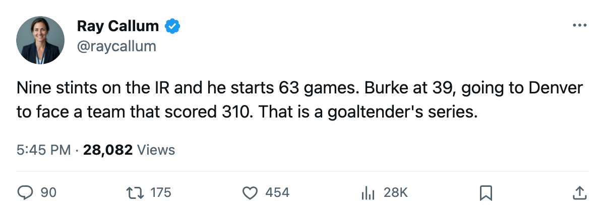

Goalie Watch: Sean Burke, shelved 9 times this season, starts a series against the 1st-seeded Avalanche
The Coyotes' 39-year-old goaltender finished with 63 starts on a team that had more injury spells than almost anyone. Now he faces Colorado's 310 goals.
 Ray CallumSenior correspondent · Home Ice Network
Ray CallumSenior correspondent · Home Ice Network
 Sean Burke88 was on the injured list nine separate times during the regular season. He finished with 63 starts in 82 games, a 77% workload share. He was back in the crease for
Sean Burke88 was on the injured list nine separate times during the regular season. He finished with 63 starts in 82 games, a 77% workload share. He was back in the crease for  Phoenix Coyotes's closing 4-game winning streak that carried them to 93 points and the final Western Conference position.
Phoenix Coyotes's closing 4-game winning streak that carried them to 93 points and the final Western Conference position.
The Coyotes opened the final weekend with a 4-3 win over  Nashville Predators on April 4 and closed it with a 5-1 blowout at
Nashville Predators on April 4 and closed it with a 5-1 blowout at  St. Louis Blues on April 6. In between, three more wins. Burke started all five.
St. Louis Blues on April 6. In between, three more wins. Burke started all five.
Phoenix Coyotes had 56 injury spells this season, 318 days lost. They sat one spell behind Pittsburgh, who logged 59 and 663 days. Phoenix's own medical file included two separate stints for  Sean Burke90... sorry, that is the count from the repeat cases table: nine in all. The league's body-part records show the Coyotes lost time to necks, ribs, arms, a back, a foot, a wrist, a leg.
Sean Burke90... sorry, that is the count from the repeat cases table: nine in all. The league's body-part records show the Coyotes lost time to necks, ribs, arms, a back, a foot, a wrist, a leg.
The road ahead
The series opens with two games at the Pepsi Center on April 8 and April 10, then two in Phoenix on April 12 and April 14.  Colorado Avalanche finished at 112 points, 43 wins, 310 goals for. They lead the season series against Phoenix 3-1-0, scoring 16 to 11 across four meetings.
Colorado Avalanche finished at 112 points, 43 wins, 310 goals for. They lead the season series against Phoenix 3-1-0, scoring 16 to 11 across four meetings.
Colorado is 24-17 at home. Phoenix is 19-22 on the road. The Avalanche arrive at this series on a 2-game win streak after closing the season 4-2 over  Mighty Ducks of Anaheim on April 4 and 3-2 over
Mighty Ducks of Anaheim on April 4 and 3-2 over  San Jose Sharks on April 6.
San Jose Sharks on April 6.
Burke worked through all 9 of those spells and came back each time. He missed three weeks in February and started games the week he returned. Colorado put up 310 this season. Two nights in Denver is the test.
